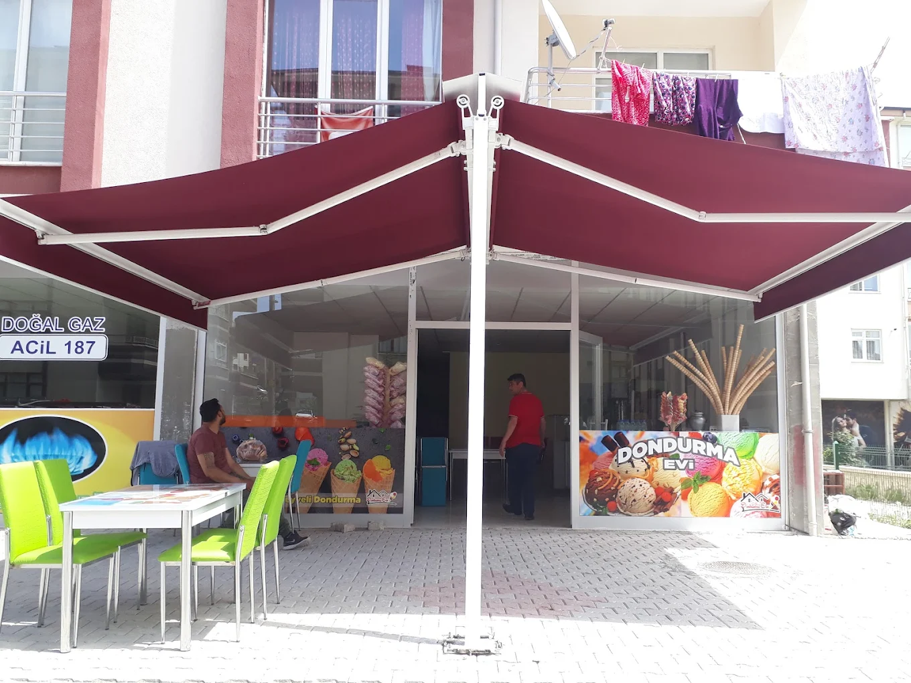
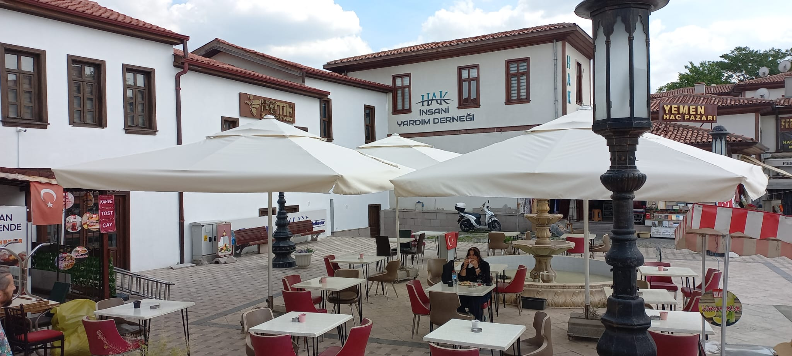
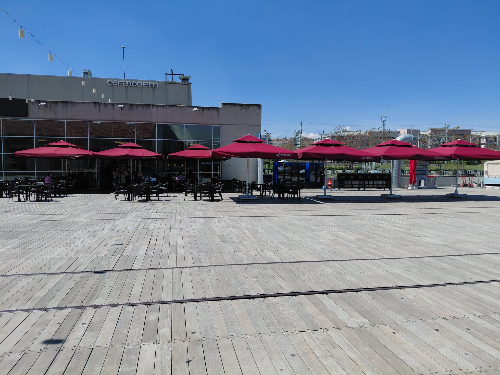
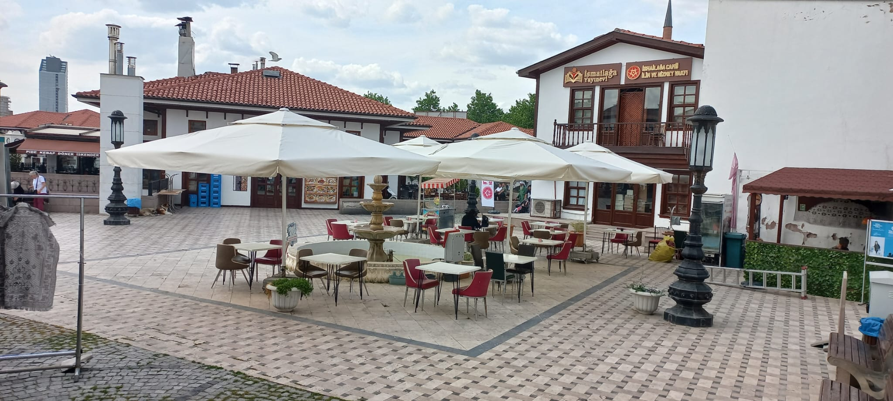
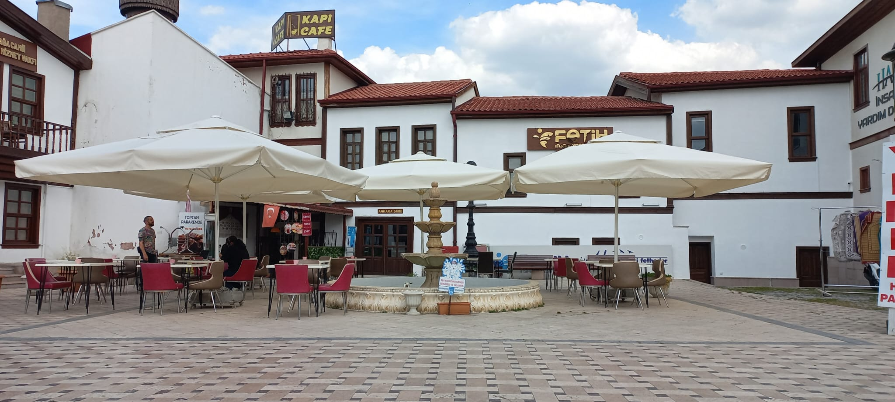
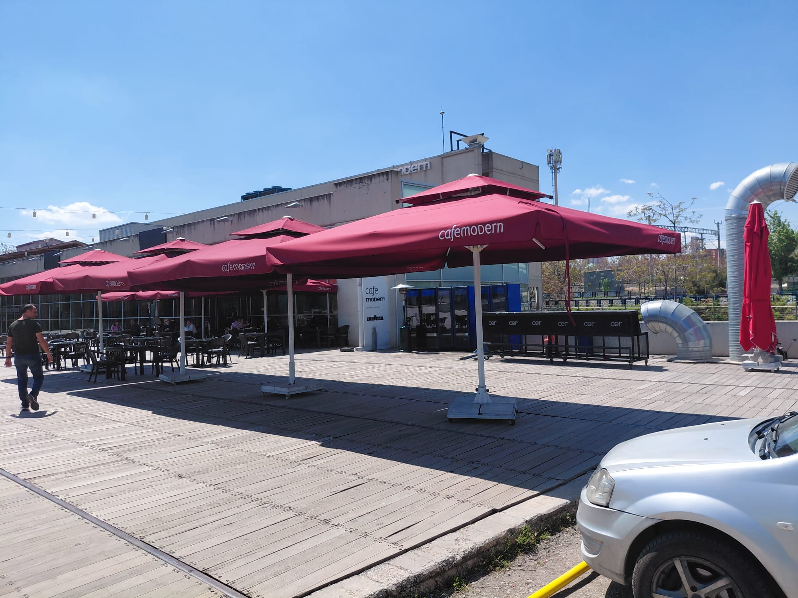
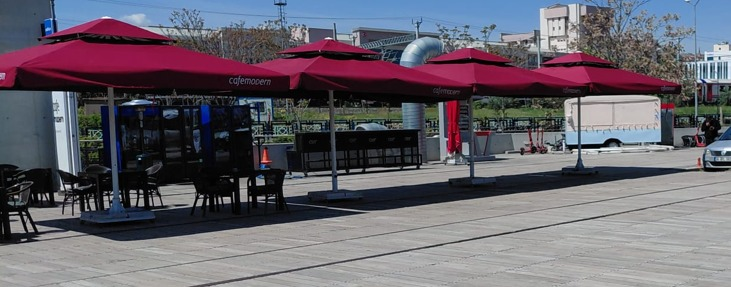
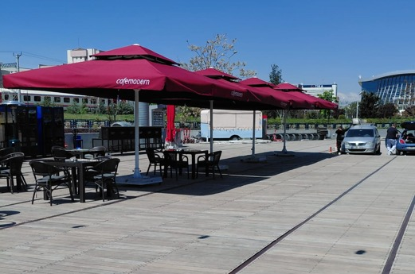

Premium Şemsiye Sistemleri
Kafe, restoran ve geniş bahçeleriniz için mimari estetiği sağlamlıkla buluşturan profesyonel şemsiye çözümleri. Maksimum gölge, minimum efor.








Üstün Teknik Özellikler
Zorlu hava koşullarına dayanıklı, estetik ve işlevsel detaylarla donatılmış sistemlerimiz, uzun ömürlü kullanım sunar.
Su İtici Akrilik Kumaş
Solmaya ve çürümeye karşı 5 yıl garantili, UV korumalı ithal akrilik kumaş teknolojisi ile yağmurdan ve güneşten tam koruma.
Güçlendirilmiş Alüminyum Gövde
Elektrostatik toz boyalı, rüzgara karşı ekstra direnç sağlayan özel çekim alüminyum profiller.
Kolay Açılır Kapanır Mekanizma
Teleskopik sistem sayesinde altındaki masaları kaldırmadan kolayca açılıp kapanabilme özellği.
Hareketli ve Sabit Ayak Seçenekleri
Mekanınızın ihtiyacına göre tekerlekli, mermer ağırlıklı veya yere sabitlenen flanşlı özel tasarım taşıyıcı ayaklar.